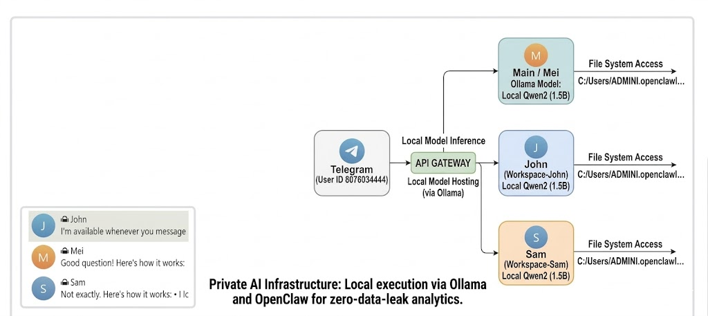

This architecture demonstrates a transition from simple chatbots to Autonomous Systems. Each agent operates within a dedicated local file-system workspace, coordinated by an intelligent API Gateway.
